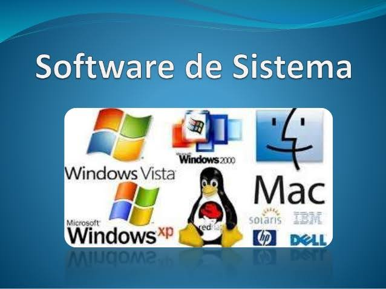

Software
Que es un Software
Se define software como “el conjunto de componentes lógicos que hacen posible la realización de tareas específicas” (Carmona Romera, 2017).
Tomando como base esta definición y su aplicación en el área de la confección, será de gran utilidad el conocimiento y dominio de herramientas tecnológicas que permitan mejorar la productividad en los procesos de diseño y confección de modas, tales como, procesadores de texto, hojas electrónicas, presentaciones ejecutivas y bases de datos, junto con el conocimiento y dominio del ciberespacio y herramientas colaborativas.
En el campo de las TIC se encuentran diferentes tipos de software de acuerdo con la función que realizan, bien sea en la administración de los recursos del computador o en las aplicaciones que el usuario necesite para el desempeño de su trabajo.
|
 |
Según (Gómez de Silva Garza & Ania Briseño, 2008), el software de sistema está constituido por los programas que se encargan del control y administración de los recursos de cómputo y los que permiten la interacción entre los usuarios y los sistemas de aplicación o el hardware. Ejemplos de este tipo de software son los traductores (compiladores, intérpretes y ensambladores) y los sistemas operativos como Windows, XP o Vista, y varias versiones de Unix, por ejemplo, AIX de IBM. En la actualidad se cuenta con versiones más actualizadas como son Android, IOS, Windows 10, que funcionan inclusive en equipos móviles, generando mayor rendimiento en los dispositivos. |
 |
El software o sistemas de aplicación son los programas que permiten a una computadora realizar actividades específicas de procesamiento de información y ofrecer una funcionalidad a los usuarios finales. (Gómez de Silva Garza & Ania Briseño, 2008). Ejemplo de este tipo de software son los editores o procesadores de texto como Word, hojas de cálculo como Excel, presentaciones ejecutivas como Power Point y antivirus como McAfee o Avast entre otros. |
 |
El software de programación permite a determinados usuarios, la comunicación con la máquina o dispositivo, para el desarrollo de aplicaciones que facilitan el manejo de la información y con ello la toma de decisiones; también se denominan lenguajes de programación. Los lenguajes de programación se clasifican en tres niveles, alto, medio y bajo de acuerdo con su comprensión y cercanía con la máquina o dispositivo. El nivel bajo, se denomina lenguaje de máquina y es utilizado para la creación y administración del software del sistema o sistema operativo y el nivel más alto es utilizado por los programadores en la creación de aplicaciones comerciales o científicas. EL software de programación se presenta a través de Entornos Integrados de Desarrollo (IDE), que ofrecen la posibilidad de construir aplicaciones para diferentes ambientes como la Web y/o dispositivos móviles. Algunos ejemplos de IDE son Netbeans, Eclipse y otros conocidos como editores de programación, entre los cuales se encuentran Visual Studio, Sublime Text, Brackets, Atom. Etc. |